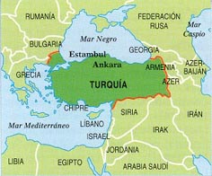
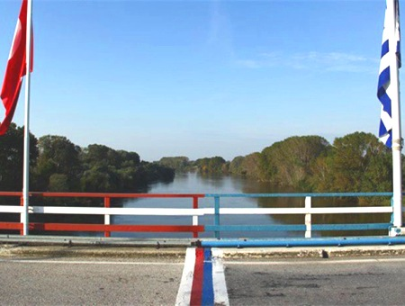

-FRONTERAS CON GRECIA-

Grecia está estratégicamente ubicada entre Europa, Asia y África, y comparte fronteras terrestres al noroeste con Albania, al norte con Macedonia del Norte y Bulgaria, y al noreste con Turquía. Al este se encuentra el mar Egeo, al oeste el Mar Jónico y en el sur, el Mediterráneo; estos tres mares bañan sus 13 676 km de costas, el 11.° litoral más largo del mundo.
